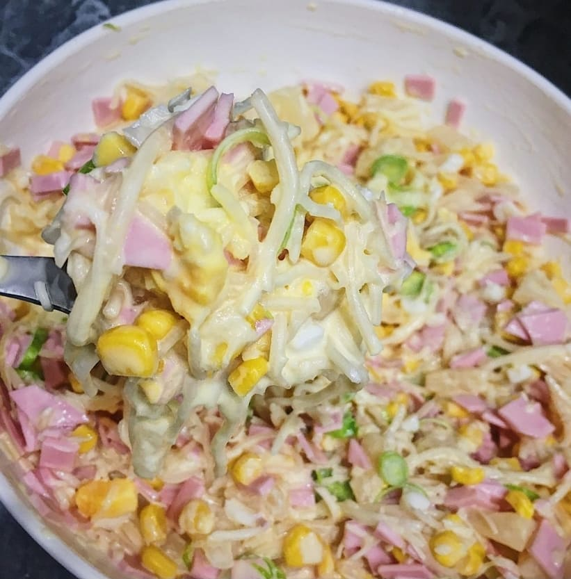

Zelerový šalát podľa @foodbytinka — Normy Jedál
Posledný recept z narodeninovej oslavy. Tento neskutočný zelerový šalát všetkých prekvapil a mal taký veľký úspech, že zatienil aj ostatné dobroty na stole.
Recept naň nájdeš v BIO.
#salat #zeler #kukurica #sunka #zelerovysalat #obed #jedlo #food #salad #yummy #foodlover #foodblogger #instafood